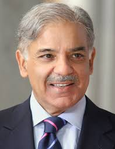

Shehbaz Sharif
1951 - coming-soon
Prime Minister of Pakistan
Mian Muhammad Shehbaz Sharif (Urdu, Punjabi: میاں محمد شہباز شریف, pronounced [miˈãː moˈɦəmːəd ʃɛhˈbaːz ʃəˈriːf]; born 23 September 1951) is a Pakistani politician and businessman who is currently serving as the 23rd prime minister of Pakistan, in office since 11 April 2022.[1][2] He is the current president of the Pakistan Muslim League (N) (PML-N). Previously in his political career, he served as the Chief Minister of Punjab three times, making him the longest-serving Chief Minister of Punjab.[3]
Biographies
- He was re-elected as the President of PML-N for a second term in August 2006.
- Shehbaz was not allowed to take part in the 2008 general election.
- Shehbaz was re-elected to the Provincial Assembly of Punjab unopposed from Constituency PP-48.
- His second term as Chief Minister lasted until 25 February 2009.
- On 29 July 2017, Shehbaz was named leader of the PML-N, and hence Prime Minister-designate of Pakistan.
- On 27 February 2018, Shehbaz was appointed as the interim President of the PML-N.
- On 7 June 2018, Shehbaz was succeeded by Hasan Askari Rizvi as caretaker Chief Minister of Punjab.
- On February 18, 2021, he issued the directive with relation to certain deadlines.